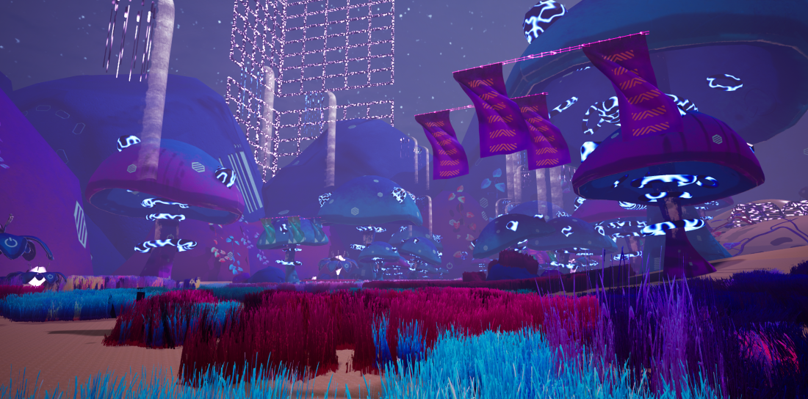
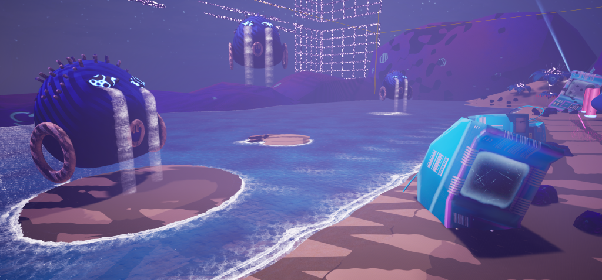
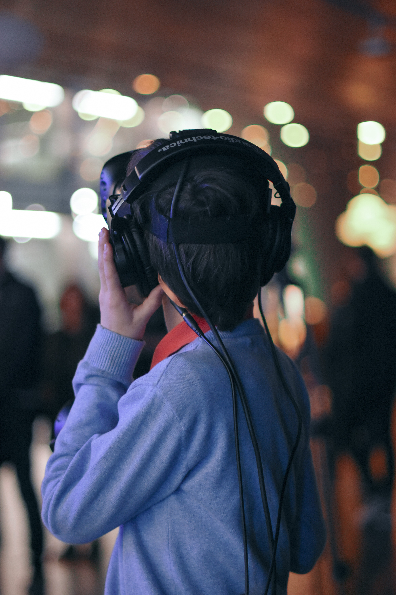
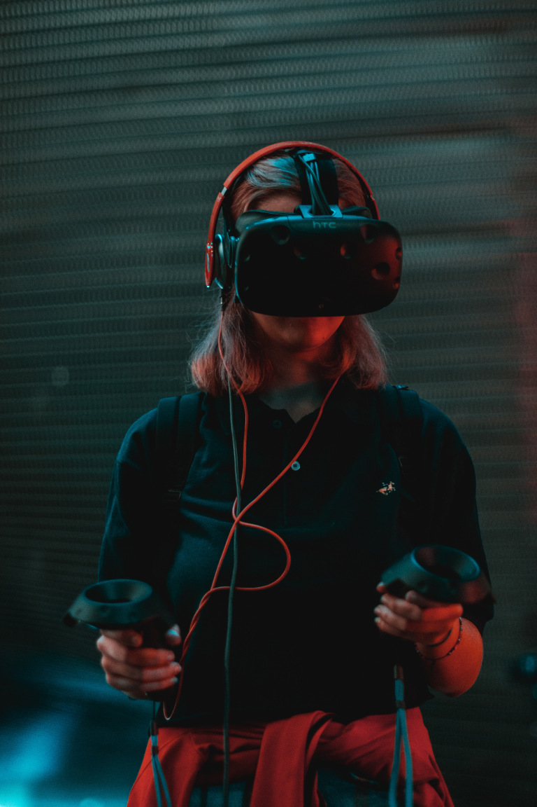

Fluido.obj

Fluido.obj is a virtual reality installation that centres the experience in a perceptive element.. Nostalgia as a vibe. by exploring futuristic landscapes of the memory.
The work is inspired by the Idea of Lore- a concept coming from internet culture referings to a set of background stories, world-building details, myths, that form the narrative foundation of a fictional universe. This is very common inside genres derived of vaporwave like dreamcore, TraumaCore, and weirdCore.
Born around 2010, “The Lore” became a way that internet users refer to the context behind a narrative, a genre born online that collects cultural debris of aestheticized melancholia. This remains relevant because we are still looping through its themes: trapped in hyperconsumerism, disillusioned with politics, entangled to our devices, and nostalgic to the core.
In Fluido.obj, audience is invited to scape to a memory that is not necesary personal, but can be anywere, anytime, remembering something that we have never actually experienced. While traveling through virtual waterfalls, luminous structures and electronic sounds, audience can also modify the aesthetic of their surroundings, evoking a memory of a memory, a reference of a reference, in this way echoing a recursive aesthetic of the internet itself.
“I seek to design a map of controllers for my own emotions, as an attempt to become a machine. Stroll around my aquatic fantasies and find my own rhythm (because you can easily get lost on other people’s sounds and rhythms).
As I design that paradise, surreal and blue, I create a metaphor/space for my psyche. I put together an emotional device that I need to share.”🍄️
About the installation.
To begin the experience, the player inserts a CD-ROM into a Discman. This physical process opens a 5-minute journey/narrative, during which the player can customize the mood through sound and light, shaping their own version of digital nostalgia.
The VR environment unfolds across three aquatic spaces—each one embodying a distinct sensation. These settings include a beach beneath the ocean, a glowing electric tunnel, and a forest of oversized fungi. As users drift through these virtual spaces—cascading waterfalls, luminous forms, ambient soundscapes—they can interact with and transform the environment in real time, by changing the Lights and the effects of the Music.
The decision to work in VR as technic output for this project, stems from a desire to amplify the perception element . Vaporwave usually offers a window into a mood—but in Fluido.obj, that mood becomes spatial. Virtual Reality allows for a deeper immersion to go to another dimension and bring back tracks, becoming a container of memories. A dream without humans. A futuristic landscape from the past.
The idea of Mood and Aethetics is very present in this work In a way that Audience become users that can Customize the experience, like a substance you can buy in a mall. A vague sense of desolation packaged as a vibe. The piece acts like a container of memories, like a place you visited in your dreams or the feeling of being on hold.


Exhibitions:
- 2019:
20th edition of MUTEK Montréal.
3rd edition of MUTEK Argentina.
- 2020:
Mirage festival. France.
- 2023:
APAP7. Triennal. Anyang Korea.

